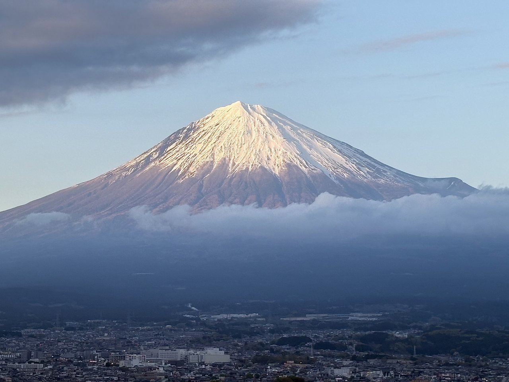

4 stops · about 4 hrsCourse 01
Classic highlights
The signature half-day: a secret viewpoint, the great shrine, soul-food lunch and award-winning tea.
Stop 1
Hidden Fuji viewpoint
A local spot chosen that morning for the day's clearest view.
Stop 2
Sengen Shrine
The head shrine of Fuji worship, the peak behind the torii.
Stop 3
Fujinomiya yakisoba lunch
B-1 Grand Prix soul food at a family-run counter.
Stop 4
Award-winning tea house
Matcha and seasonal sweets in a 400-year-old hall.